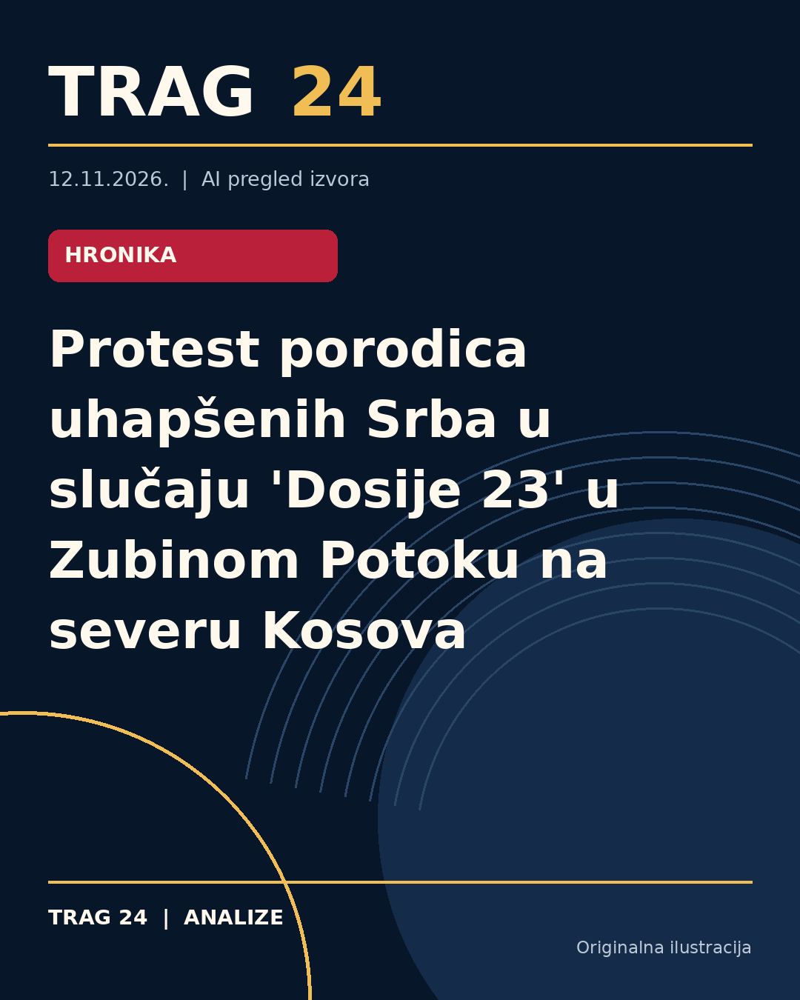

Protest porodica uhapšenih Srba u slučaju 'Dosije 23' u Zubinom Potoku na severu Kosova

ŠTA SE DOGODILO
Porodice devetoro Srba uhapšenih 27. septembra u akciji tužilaštva i policije Kosova u okviru slučaja "Dosije 23" održale su protest ispred zgrade opštine u Zubinom Potoku. Uhapšeni su osumnjičeni za ratne zločine povezane sa masovnim grobnicama u selima Kaludra i Jabuka kod Zubinog Potoka. Prisutni su bili članovi dve porodice uhapšenih koji su tražili pravičan postupak i mogućnost da se njihovi najbliži brane sa slobode.
HRONOLOGIJA
Uhapšeni su 27. septembra u zajedničkoj akciji kosovskog tužilaštva i policije. Prvi protest održan je 14. decembra u centru Zubinog Potoka, a drugi protest potom danas ispred opštine. Protesti su najavljeni da će se održavati svakodnevno od 13 do 14 časova do 25. decembra, datuma do kada je određen pritvor uhapšenima. Tokom protesta priložio se i predsednik opštine Zubin Potok, Miloš Perović, kao i nekoliko zaposlenih u lokalnoj upravi.
ŠTA NAVODE IZVORI
Porodice navode da je pritvor uhapšenima produžavan te da se oni nalaze u pritvoru u Podujevu. Ističu zabrinutost zbog stanja svojih najbližih i smatraju da su prepušteni gotovo sami sebi u borbi za slobodu. Porodice zahtevaju pravično suđenje i da, ako postoje zakonski uslovi, njihovi članovi mogu da se brane sa slobode. Naglašavaju da ne traže milostinju već pravdu i da se čuju njihovi glasovi u ovom teškom periodu.
ŠTA JE POTVRĐENO
Potvrđeno je da je devetoro Srba uhapšeno zbog sumnji za ratne zločine u vezi sa masovnim grobnicama u selima Kaludra i Jabuka. Takođe je potvrđeno da porodice organizuju proteste na severu Kosova i da pritvor uhapšenima traje i produžava se. Prisutni na današnjem protestu su bili članovi dve porodice, a nije bilo šire rodbine, prijatelja ili predstavnika drugih porodica privedenih u prošlosti.
ŠTA NIJE POTVRĐENO
Nije potvrđeno u javnim izvorima trenutno koji su konkretni dokazi na osnovu kojih je određena ova radnja, niti kako će dalje teći postupak suđenja. Takođe, u dostupnim izvorima nema podataka o zvaničnim reakcijama kosovskih institucija ili drugih zvaničnika na proteste porodica.
ŠTA OSTАJE OTVORENO: Ostaje otvoreno kako će se dalje razvijati pravni postupak protiv uhapšenih i da li će porodice uspeti u zahtevima da se uhapšenima omogući odbrana sa slobode. Takođe, ostaje nepoznato kakav će biti dalji društveni odgovor na proteste i da li će doći do šire podrške ili uključivanja drugih porodica ili zajednice.
Izvori
- https://nova.rs/vesti/hronika/u-zubinom-potoku-na-severu-kosova-protest-porodica-uhapstenih-srba-u-slucaju-dosije-23/
- https://www.danas.rs/vesti/politika/u-zubinom-potoku-na-severu-kosova-protest-porodica-uhapstenih-srba-u-slucaju-dosije-23/
- https://n1info.rs/vesti/u-zubin-potoku-na-severu-kosova-protest-porodica-uhapsenih-srba-u-slucaju-dosije-23/
Ova analiza je pripremljena uz pomoć veštačke inteligencije na osnovu javno dostupnih izvora. Navodi izvora nisu nužno nezavisno potvrđeni.